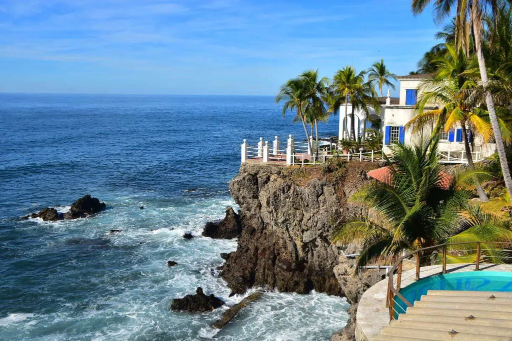
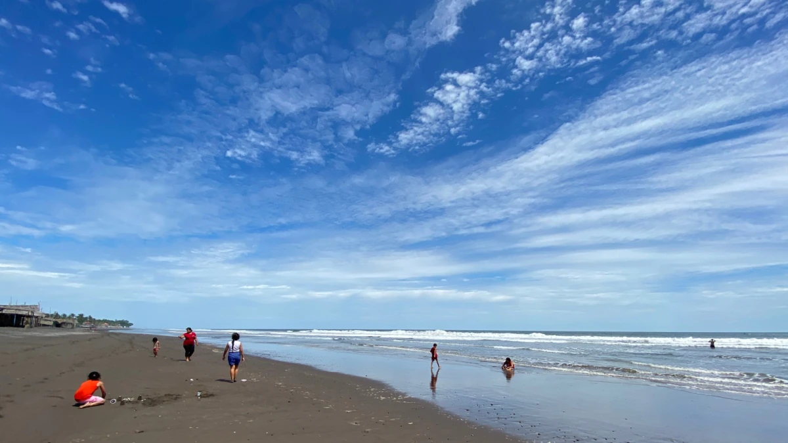
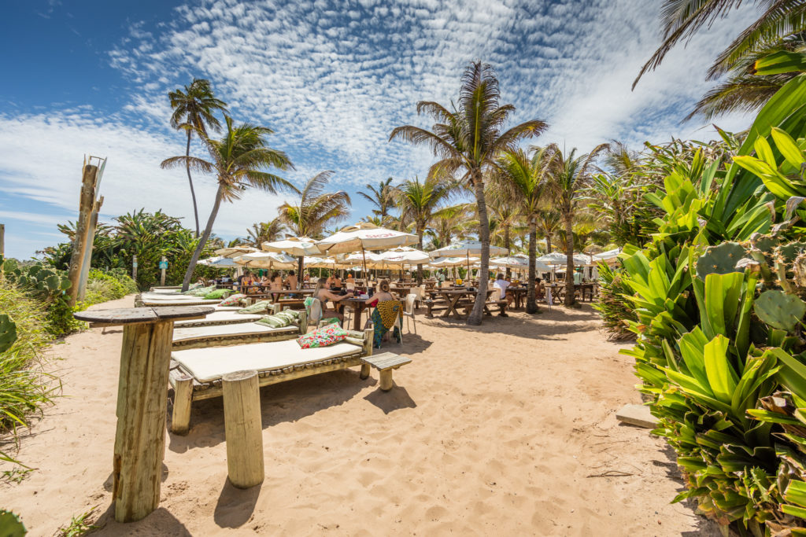
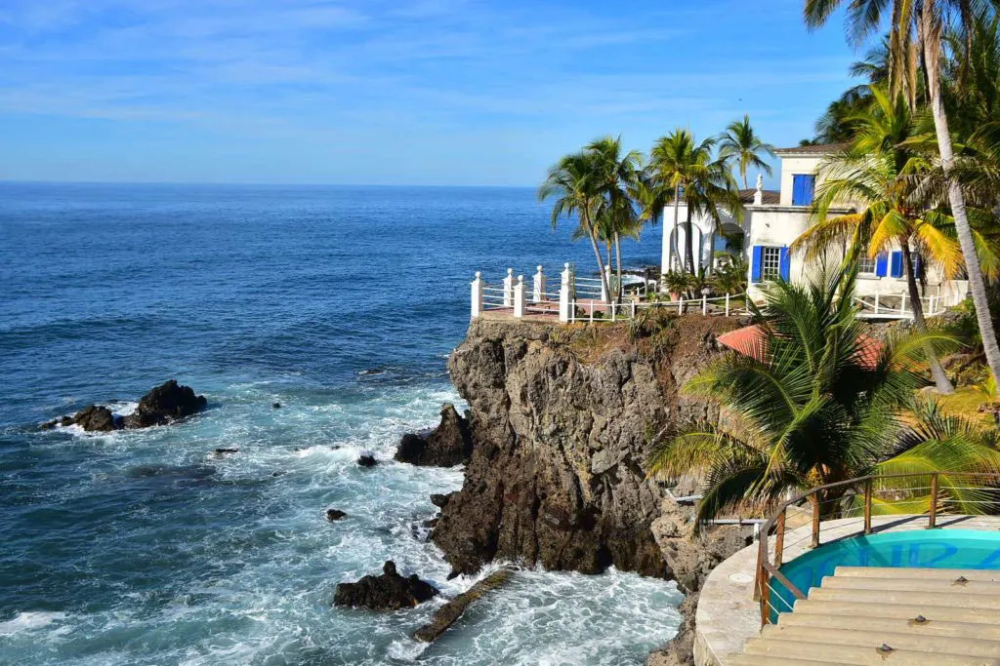
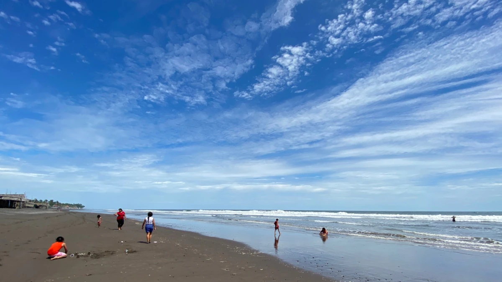
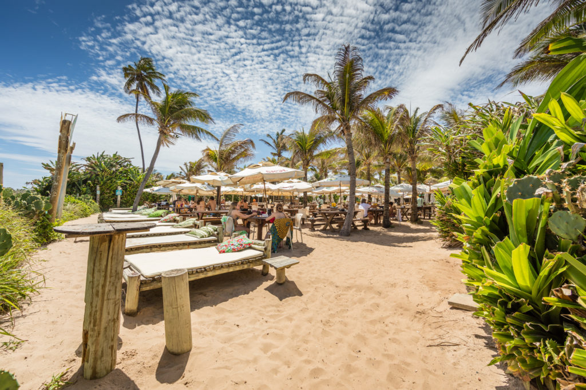

Playas

Playa Maculis
La playa Maculís, ubicada en el departamento salvadoreña de La Unión (sudeste), es considerada como “el mejor lugar para aislamiento espléndido y puestas del sol”, según un periódico británico.
conoce mas
Playa El Tunco
Esta playa es conocida por la famosa piedra que forma la imagen de un Tunco (Cerdo) que se encuentra a la orilla de este lugar y que por años ha visto pasar generaciones de surfistas que han crecido y practicado el Surf en el territorio nacional.
conoce mas 




